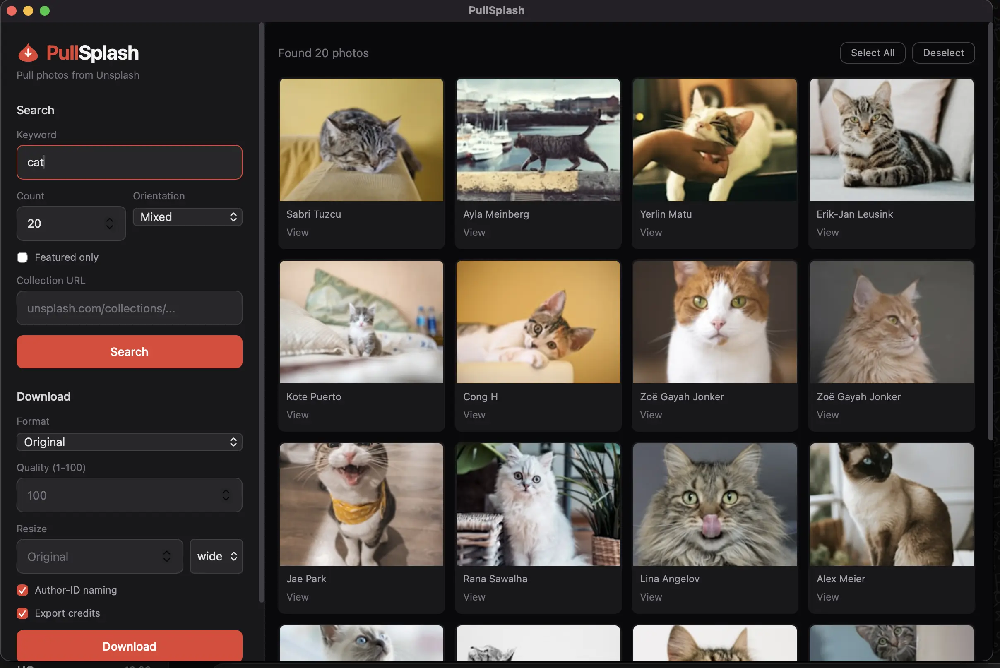

PullSplash
Pull stunning photos from Unsplash.
Bulk download, resize, convert — all in a native desktop app.

PullSplash running on macOS — search, select, download in one window
Everything you need
Bulk Download
Search by keyword or paste a collection URL. Select multiple photos at once — no limits on selection. Choose between folder download or direct browser download with a single click.
Image Processing
Convert to JPG, PNG, or WebP. Resize with automatic aspect ratio — set width or height and the other dimension scales proportionally. Adjust quality from 1–100%. All processing happens locally, no uploads.
Native Desktop App
Built with pywebview — runs as a real macOS or Windows application. No browser, no terminal, no Electron bloat. Just 14 MB download. Dark-themed sidebar with all controls in one place.
Always Up to Date
Built-in update checker notifies you when a new version is available. Downloads go straight to your Downloads folder — organized, named, and credited. No configuration files to mess with.
Get started in 3 steps
Get an API Key
Create a free Unsplash Developer account at unsplash.com/developers. Copy your Access Key — it takes 30 seconds.
Search & Select
Type a keyword like "mountain" or paste a collection URL. Browse results, click to select photos, or hit Select All to grab everything at once.
Download
Pick your format and size in the sidebar, click Download. Files go to Downloads/PullSplash on your machine — named, credited, ready to use.
Built by @vidokun · Open source on GitHub · MIT License
Credits: Bulksplash · pywebview